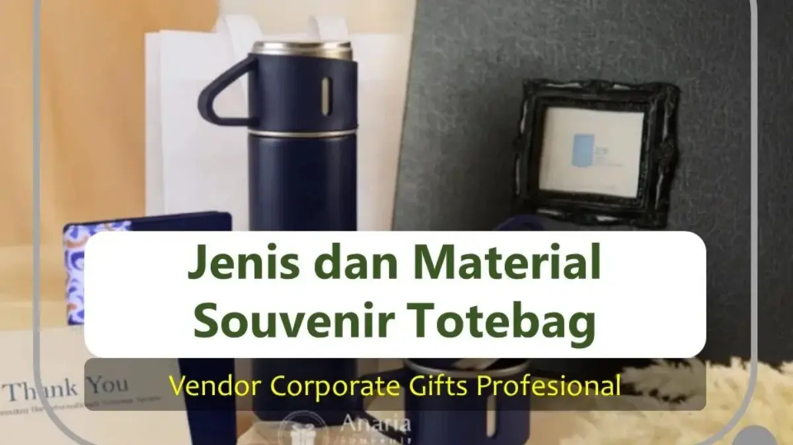

Corporate Gifts ID - Jenis dan material bahan souvenir totebag premium umumnya terbagi menjadi empat kategori utama, yaitu kain kanvas tebal, spunbond ekonomis (non-woven), blacu katun natural, serta kain drill/twill dengan teknik custom digital printing. Pemilihan material totebag yang tepat harus diselaraskan dengan tingkat formalitas acara, profil tamu penerima, kapasitas muatan barang, dan alokasi anggaran (RAB) agar cinderamata terlihat profesional, fungsional, dan memiliki masa pakai yang panjang.
Di era industri modern, totebag bukan lagi sekadar kantong belanja sederhana. Mulai dari konferensi internasional, seminar kit BUMN, pernikahan eksklusif, hingga acara family gathering tahunan, totebag selalu menjadi primadona cinderamata berkat fungsionalitasnya yang tinggi, fleksibilitas area branding yang luas, serta nilai kepedulian terhadap lingkungan (eco-friendly).
Poin Kunci Pemilihan Bahan Totebag:
- Kain Kanvas: Pilihan nomor satu untuk citra eksklusif, memiliki serat tebal, kuat menahan beban berat, dan sangat awet.
- Kain Spunbond: Solusi terbaik untuk acara berskala massal dengan ribuan peserta karena biaya produksi sangat hemat.
- Kain Blacu: Menawarkan tampilan rustic estetik berbasis serat kapas alami unbleached yang ramah lingkungan.
- Area Cetak Luas: Memungkinkan logo instansi, tipografi tagline, dan ilustrasi visual terlihat mencolok di ruang publik.
- Vendor B2B Berpengalaman: Percayakan pesanan Anda kepada CorporateGifts.ID untuk jaminan jahitan obras ganda kuat, sampel fisik gratis, dan pengiriman tepat waktu.
Mengapa Souvenir Totebag Menjadi Pilihan Utama Korporat?
Sebagai media promosi bergerak (walking billboard), totebag memiliki tingkat retensi pakai yang luar biasa tinggi. Berbeda dengan merchandise yang hanya disimpan di meja kerja, tas totebag sering dibawa penerima saat bepergian ke kantor, berbelanja ke supermarket, menghadiri kelas perkuliahan, atau beraktivitas santai di akhir pekan.
Setiap kali totebag digunakan di tempat umum, identitas merek (brand identity) perusahaan Anda akan terekspos secara alami kepada ratusan pasang mata tanpa memerlukan biaya iklan berulang.
1. Totebag Bahan Kanvas (Canvas Cotton)
Totebag berbahan kanvas merupakan standar tertinggi bagi perusahaan yang mengutamakan prestise, daya tahan maksimal, dan estetika premium.
- Kelebihan: Struktur kain sangat tebal dan rapat, kuat menampung beban laptop, buku tebal, hingga tumbler stainless steel tanpa takut sobek. Memberikan kesan berkelas dan profesional.
- Kekurangan: Biaya bahan baku relatif lebih tinggi dibandingkan bahan kain lainnya dan memiliki bobot sedikit lebih berat saat dikirim dalam jumlah ribuan unit.
- Aplikasi Terbaik: Corporate gifts untuk klien VIP, seminar kit eksekutif perbankan, merchandise resmi universitas, dan cinderamata pernikahan mewah.
- Estimasi Harga: Rp15.000 - Rp35.000 per pcs (bergantung gramasi ketebalan kain dan dimensi tas).
2. Totebag Bahan Spunbond (Non-Woven)
Spunbond dibuat dari serat sintetis polypropylene melalui proses mekanis non-anyaman. Bahan ini menjadi pilihan utama untuk pengadaan goodie bag berskala besar dengan anggaran efisien.
- Kelebihan: Harga per unit sangat terjangkau, bobot ekstra ringan, tahan percikan air ringan, serta tersedia dalam puluhan variasi warna cerah yang mudah dipadukan dengan logo acara.
- Kekurangan: Daya tahan pakai tidak selama kanvas atau blacu, kurang cocok untuk memuat barang yang terlalu berat atau memiliki sudut tajam.
- Aplikasi Terbaik: Goodie bag seminar mahasiswa, tas expo/pameran dagang, suvenir bakti sosial CSR, dan tas promosi toko ritel.
- Estimasi Harga: Rp3.000 - Rp7.500 per pcs (tersedia ketebalan 50 gsm, 75 gsm, hingga 100 gsm).
3. Totebag Bahan Blacu Natural
Kain blacu merupakan kain katun mentah yang belum melalui proses pemutihan kimia (unbleached cotton). Ciri khas warnanya yang putih gading (broken white / off-white) memberikan daya tarik visual yang hangat.
- Kelebihan: 100% biodegradable dan ramah lingkungan, mudah dicuci berulang kali, tekstur kain lentur, serta sangat menonjol saat dipadukan dengan desain sablon bergaya minimalis atau seni tipografi.
- Kekurangan: Kain lebih tipis daripada kanvas dan mudah berkerut (kusut) apabila tidak disetrika setelah pencucian.
- Aplikasi Terbaik: Souvenir komunitas pecinta alam, workshop industri kreatif, event kampanye hijau (ESG), dan cinderamata pernikahan bertema rustic.
- Estimasi Harga: Rp7.000 - Rp16.000 per pcs.

Kombinasi souvenir totebag premium dengan paket gift set kantor dan drinkware eksklusif.
4. Totebag Custom Logo & Digital Print
Bagi brand yang memiliki identitas visual dinamis dengan ilustrasi gradasi penuh warna, totebag custom dengan teknik digital printing (DTF atau Sublimasi) menjadi solusi terbaik.
- Kelebihan: Mampu mereproduksi logo korporat yang rumit, foto produk, maupun karya seni ilustrasi dengan detail tajam dan warna akurat (full-color high resolution).
- Kekurangan: Biaya setting produksi digital sedikit lebih tinggi untuk jumlah pesanan di bawah minimum order.
- Aplikasi Terbaik: Merchandise startup teknologi, apparel promosi musik/festival, dan suvenir launching produk baru.
- Estimasi Harga: Rp10.000 - Rp28.000 per pcs.
Tabel Perbandingan Karakteristik & Estimasi Harga
Berikut rangkuman perbandingan menyeluruh dari keempat material bahan totebag untuk memudahkan perencanaan pengadaan barang:
| Jenis Material Totebag | Karakteristik & Keunggulan | Estimasi Rentang Harga | Rekomendasi Kebutuhan Acara |
|---|---|---|---|
| Kanvas Premium (Canvas Cotton) | Serat kain rapat, sangat tebal, daya tahan beban berat, tampilan mewah dan elegan. | Rp15.000 - Rp35.000 | Corporate gift VIP, cinderamata direksi, hadiah gathering eksekutif, merchandise kampus. |
| Spunbond (Non-Woven PP) | Bobot sangat ringan, tahan percikan air, puluhan opsi warna cerah, biaya sangat ekonomis. | Rp3.000 - Rp7.500 | Goodie bag seminar massal, expo pameran dagang, pelatihan mahasiswa, workshop komunitas. |
| Blacu Katun Natural | Serat kapas unbleached, warna broken white natural, ramah lingkungan (biodegradable). | Rp7.000 - Rp16.000 | Event CSR sustainability, pernikahan rustic minimalis, pelatihan kreatif, instansi hijau. |
| Custom Print (Drill / Twill) | Tekstur kain diagonal elegan, fleksibilitas cetak desain grafis full-color beresolusi tinggi. | Rp10.000 - Rp28.000 | Branding perusahaan startup, merchandise festival seni, kampanye promosi ritel. |
Panduan Memilih Bahan Totebag Sesuai Kebutuhan Acara
Untuk memastikan keputusan pengadaan Anda tepat sasaran dan memberikan laba atas investasi (ROI) branding terbaik, ikuti pedoman ringkas berikut:
- Prioritas Efisiensi Anggaran & Peserta Massal: Gunakan totebag spunbond ketebalan 75 gsm dengan sablon 1 warna yang rapi dan kontras.
- Menonjolkan Komitmen Lingkungan (ESG & CSR): Pilih totebag blacu natural tanpa pewarna kimia yang dipadukan dengan kemasan tali rami.
- Acara Korporat Resmi & Klien Strategis: Pilih totebag kanvas tebal dengan jahitan tali webbing katun berkualitas tinggi serta ritsleting penutup (zipper) agar barang bawaan tetap aman.
Pertanyaan Seputar Souvenir Totebag (FAQ)

Ditulis oleh: Arinda Zakia
Senior Corporate Gifting SpecialistPraktisi pengadaan merchandise korporat, kurasi suvenir seminar fungsional, dan perancangan gift set B2B profesional di CorporateGifts.ID.
Lihat Profil Lengkap & Panduan Lainnya